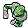
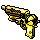
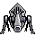
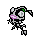
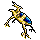

| 名前 | 対応部 | 攻 | 買/売 | 説明 | 発動 | 装備時の特殊効果 | 版 | |
|---|---|---|---|---|---|---|---|---|
| ハイエロファントグリーン | 3 | 10 | 900 + 50n / 450 + 50n | 離れた敵にダメージを与えるぞ | 足元に法王の結界を仕掛けるぞ | 眠り攻撃を防ぐ（眠らずにすむ） | 0.13 | |
 | ハイエロファントエメラルド | 3 | 15 | 900 + 50n / 450 + 50n | 離れた敵にダメージを与えるぞ | 足元に法王の結界を仕掛けるぞ | 眠り攻撃を防ぐ（眠らずにすむ） | 0.13 |
| タワー・オブ・グレー | 3 | 5 | 1300 + 50n / 650 + 50n | 敵を貫通するぞ | 近い距離に瞬間的に移動するぞ | 落とし穴の罠（ダービー弟）に落ちない | 0.13 | |
 | エンペラー | 3 | 8 | 800 + 50n / 400 + 50n | 壁に当たると方向が変わるぞ | 弾丸の軌道を操れるぞ | 鏡（ハングドマンのガラスの破片の罠）を踏んでも刺されない | 0.13 |
| ラバーズ | 3 | 0 | 550 + 50n / 275 + 50n | 取り付いた敵は自分と同じダメージを喰らうぞ | 足元にラバーズを潜ませておけるぞ | 敵のラバーズが分裂して増えない | 0.13 | |
| ホルス神 | 3 | 0 | 1100 + 50n / 550 + 50n | 敵を凍らせて動けなくするぞ | 足元に氷の罠を仕掛けるぞ | 凍結を防ぐ 老化攻撃（最大の力・最大HPを減らす攻撃、力を弱める攻撃）を防ぐ ホワイトアルバムの罠を無効にする | 0.13 | |
| エコーズACT1 | 4/5 | 0 | 550 + 50n / 275 + 50n | 音を貼り付けて敵を混乱させるぞ | 足元に音の罠を仕掛けるぞ | 玉美にお金を奪われない（状態窓の文言のみで、効果のコードは未確認） | 0.13 | |
| エコーズACT2 | 4 | 0 | 450 + 50n / 225 + 50n | 敵をドヒュウと吹き飛ばせるぞ | 足元にドッグォンの文字を仕掛けるぞ | 装備中のDISCに由花子（プッツン由花子）の呪いがかからない | 0.13 | |
| ヘブンズドアー | 4 | 0 | 1600 + 50n / 800 + 50n | 特殊攻撃を封印するぞ。重ねがけもできるぞ。 | 目の前の敵の情報がわかるぞ | ヘブンズドアーの罠を踏んでも書き換えられない（罠の効果を無効にする） | 0.13 | |
 | ラット | 4 | 4 | 2000 + 50n / 1000 + 50n | 壁を溶かすぞ | 足跡をつけてバックトラックするぞ | ネズミ捕りの罠による修正値の減少を受けない | 共通追加 |
| セックスピストルズ | 5 | 6 | 700 + 50n / 350 + 50n | 同じ部屋の誰かに命中するぞ | ピッツァを食べると射撃回数が増えるぞ | ローリング・ストーンズの罠のダメージが軽くなる（半減） | 0.13 | |
| マン・イン・ザ・ミラー | 5 | 0 | 750 + 50n / 375 + 50n | 敵と自分の場所が入れ替わるぞ | 鈍足になる鏡を仕掛けるぞ | 殺人ウイルスのダメージが半減する | 0.13 | |
 | フー・ファイターズ | 6 | 2 | 500 + 50n / 250 + 50n | 離れた敵にダメージを与えるぞ | 体力を２０回復させるぞ | ホワイトスネイクの罠で装備が外されるとき、これが優先して外される（他の装備を守る） | 0.13 |
 | スカイ・ハイ | 6 | 0 | 1180 + 50n / 590 + 50n | 敵を盲目にするぞ | 隣接した盲目の敵にダメージを与えるぞ | スカイ・ハイの罠を無効にする リキエルのロッズ攻撃を防ぐ（ディアボロがロッズを操って回避する） | 0.15 |
| タスク | 7 | 12 | 1200 + 50n / 600 + 50n | 離れた敵にダメージを与えるぞ | 足元に移動する穴を仕掛けるぞ | 状態窓の文言は「ハーブで爪の再生が早くなる」。効果のコードは持たない | 0.13 | |
| タスクACT1 | 7 | 7 | 900 + 50n / 450 + 50n | 離れた敵にダメージを与えるぞ | 素手でのダメージが増えるぞ | ワイアードの罠でアイテムの代わりに自分（ディアボロ）が釣り上げられる | 0.15 | |
| タスクACT2 | 7 | 12 | 1200 + 50n / 600 + 50n | 壁を超えて敵にダメージを与えるぞ | 動く穴を作るぞ | ハーブを飲むと爪の再生が早くなる（状態窓の文言。ward_trap として herb の罠を扱う） | 0.15 | |
| タスクACT3 | 7 | 16 | 5000 + 50n / 2500 + 50n | 壁を超えて敵にダメージを与えるぞ | 穴に入って移動するぞ | 0.15 | ||
| チューブラー・ベルズ | 7 | 2 | 2050 + 50n / 1025 + 50n | 離れた敵にダメージを与えるぞ | 敵の臭いを記憶するぞ | 変身している敵が多くなる（花京院の変身確率が 1/20 から 1/10、ウェザーは 1/11 から 1/6） | 0.15 | |
| ノーベンバー・レイン | 9 | 11 | 1100 + 50n / 550 + 50n | ダメージを与えて一歩押し出すぞ | 周囲を水浸しにして敵にダメージＤ | 「敵の盗んだアイテムが足元に落ちる」と表示されるが、効果のコードは無く原作でも未実装 | +α |